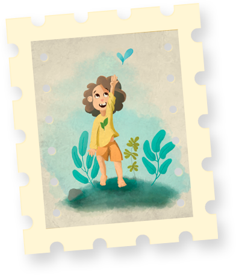

Uma forma diferente de pensar e de se expressar? Um processo intuitivo? Uma ferramenta para resolução de problemas? Uma forma de fugir do padrão; de criar algo novo? Seria uma forma de sonhar ou uma ferramenta para criação de ideias? Afinal de contas, o que - de fato - é a
criatividade?
Como diria Potyguara Bardo: "eu não sou nada, mas eu sou tudo isso aqui". A verdade é que a criatividade é um conceito bastante complexo e, portanto, difícil de ser definido. Diferentes pesquisadores e profissionais da área trarão definições diferentes deste conceito.
Da mesma forma, a criatividade possui um olhar particular de acordo com o indivíduo que a descreve, pois cada um possui um histórico de vivências diferentes, que podem contribuir de maneira ímpar para a evolução do seu pensamento criativo.
Vale lembrar que cada pessoa também possui sua própria maneira de criar; cada ser possui uma forma única de se inspirar e produzir coisas novas. Eu, por exemplo, vejo a criatividade como uma
"materializadora de ideias"; é ao mesmo tempo uma fonte de recursos, um método e uma ferramenta; algo que me permite criar tudo aquilo que ainda estava apenas em um pensamento, em uma necessidade ou anseio.
Pensar fora da caixa
O
senso comum é um dos grandes propulsores do pensamento-não-criativo. Apenas replicar o que outra pessoa pensou, te disse ou te mostrou não é pensar; é um puro "CTRL+C, CTRL+V".
No entanto, parando para refletir, se cada um de nós possui uma forma individual de criar e imaginar as coisas, como poderia existir uma
caixa para a criatividade? Se eu digo que "penso fora da caixa" (jargão muito utilizado hoje em dia), eu estou assumindo que existe uma caixa que padroniza a forma como as pessoas imaginam e criam as coisas. Entretanto, como foi relatado nos parágrafos anteriores, ninguém pensa exatamente da mesma forma que o outro.
Talvez seja a hora de deixar essa história de caixas para trás.
Novas primeiras vezes
"Há quanto tempo você não faz algo pela primeira vez?"
Essa pergunta me fez refletir bastante sobre o modo como estou vivendo atualmente. Minha rotina diária costuma ser bastante cheia de afazeres: estudo pela manhã, trabalho à tarde e, à noite, faço os trabalhos da faculdade, arrumo a casa e dou ração para o gato. E esse padrão se repete dia após dia. E de novo, e de novo. No meio desse loop infindável, aqueles pequenos prazeres de se fazer algo novo acabam não tendo seu lugar na agenda.
Contudo, as vezes essas novas tentativas acabam sendo deixadas de lado por outros motivos. Já aconteceu inúmeras vezes: eu começo uma coisa nova, me interesso, tento colocar em prática e... desisto. Não porque eu não estivesse realmente afim de fazer aquilo, mas por
insegurança; por perceber que já tem gente que faz aquilo muito melhor que eu - e parece que eu nunca vou chegar aos pés dessas pessoas.
Sei que é uma cilada, mas é difícil sair dela.
O louco
Durante as férias de verão, comecei a estudar algo que já tinha vontade de aprender há tempos: TAROT. Sim, Tarot. Não como arte divinatória, mas como uma ferramenta terapêutica de autoconhecimento. No tarot, cada uma das 22 cartas dos "Arcanos Maiores" representa um arquétipo diferente, pelo qual passamos ao longo da nossa vida. Uma das cartas que considero mais bonitas é justamente a primeira carta do baralho:
o Louco.
O Louco é o arquétipo da nossa
criança interior. Aquela criança curiosa, que se pergunta o porquê de tudo e que não tem medo de se lançar em uma nova aventura. Se ele vê uma borboleta azul cruzando o seu caminho, ele a segue até perdê-la de vista. Ele é inocente e cheio de motivação. Sorri por pequenas coisas e não tem medo de demonstrar o que sente.
Apesar da ingenuidade do Louco poder acabar levando-o a cair em maus caminhos (sem querer), eu acredito que todos precisamos da essência deste arquétipo em nossas vidas. Quando sentirmos medo de fazer algo, devemos ir com medo mesmo, sem pensar no que os outros vão falar. E mais importante, precisamos lembrar que todos aqueles que estão lá na frente, colhendo os frutos do seu trabalho, um dia também já foram o Louco que estava saindo em uma nova jornada.

Nesta semana, decidi abraçar a essência desta carta e me permitir voltar a desenhar. Mesmo que o resultado final não tenha ficado sensacional; que tenham coisas a melhorar nas minhas técnicas de criação; mesmo que nem todos tenham gostado, o importante mesmo é que eu me senti bem fazendo isso. E,
pela primeira vez, eu tive orgulho do desenho que fiz (é esse menininho aqui, na esquerda).
Embora a maior parte dos decks de tarot retratem o louco como um homem adulto ou um bobo da corte, a minha representação do Louco é justamente a da minha criança interior - as vezes adormecida, as vezes correndo atrás de borboletas.